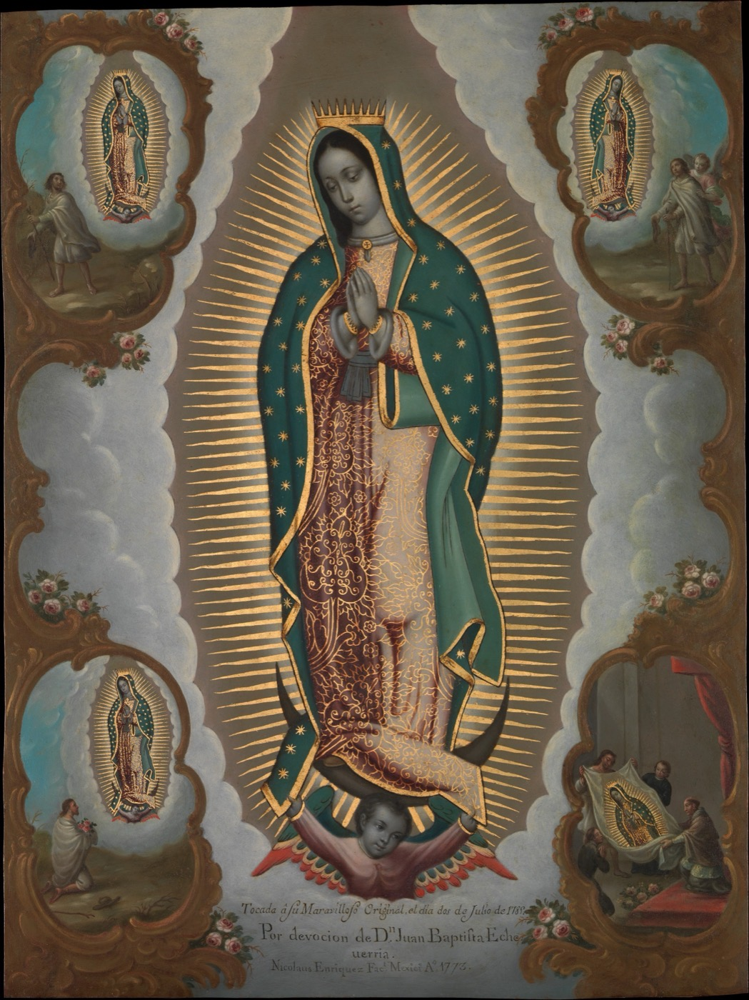
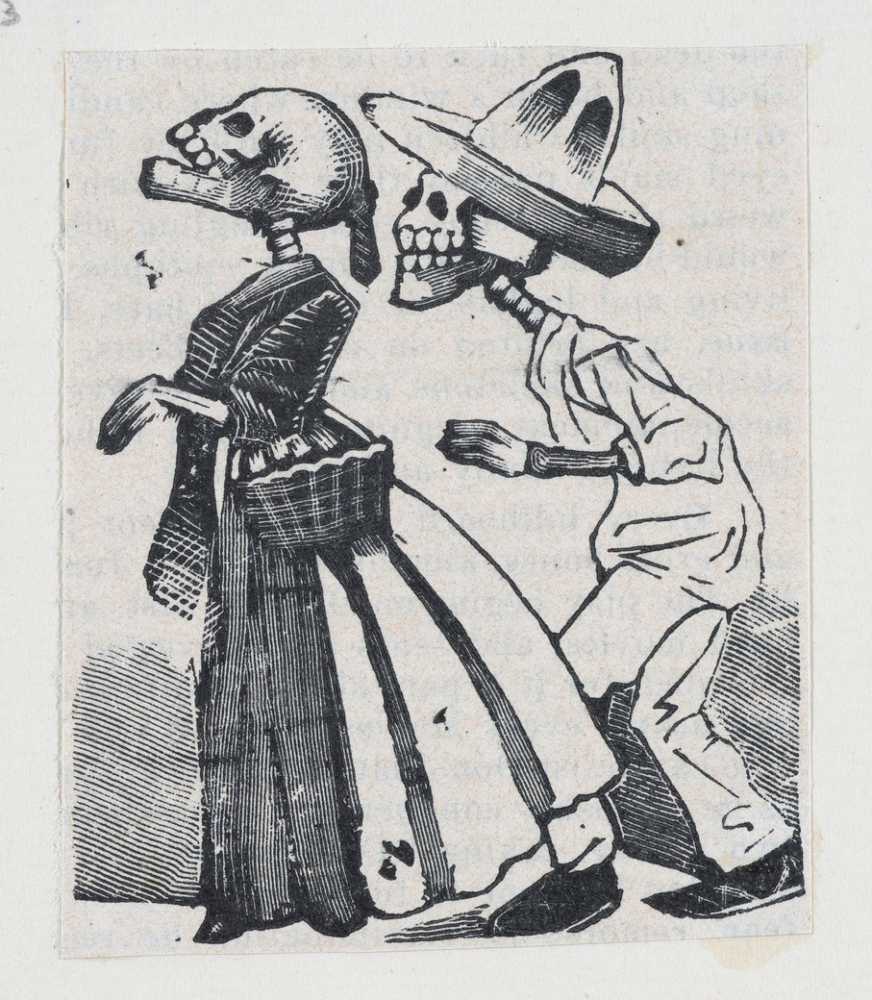
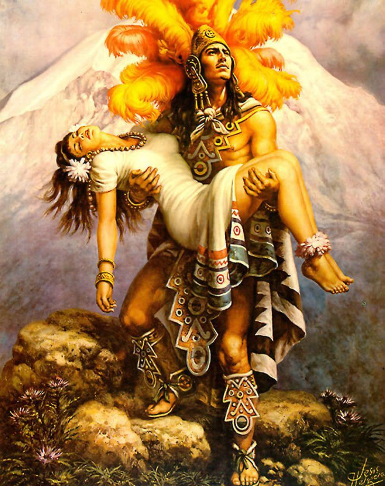
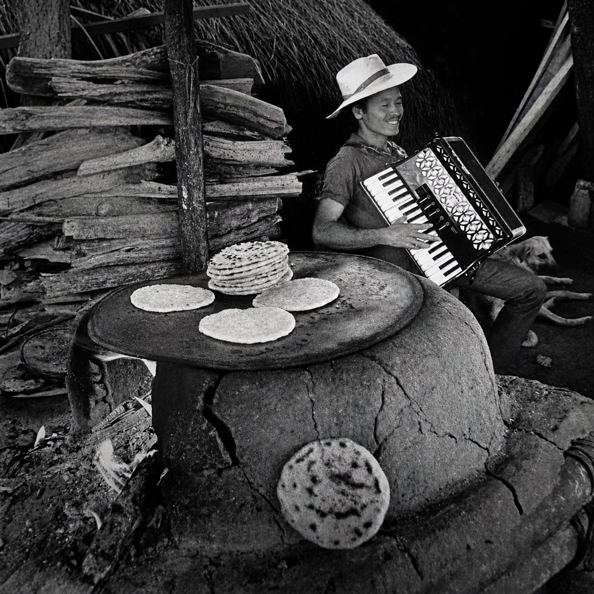

EL CUBO
Eventos · Memorias · Vida

02
03
04
05EL GRAN
PANTEÓN
Posada no grabó esto para un museo — lo grabó para la calle. Cada Día de Muertos, México vendía "calaveras literarias" en hojas sueltas: versos burlones que enterraban, en broma, al político, al rico, al vecino presumido. La muerte no perdona la vanidad de nadie. Posada murió pobre y casi olvidado; treinta años después, Diego Rivera lo sentó junto a la Catrina, en el centro de su mural más famoso.
GRANDEZA
AZTECA
Esta imagen nació como publicidad — pintada para los calendarios de una tabacalera, repartidos gratis en tiendas y panaderías por toda la República. Pero la comunidad la hizo suya: en Los Ángeles y en cada barrio chicano, ese mismo azteca terminó tatuado en la piel y pintado sobre los cofres de los lowriders — un recordatorio de que no somos los extranjeros, sino los descendientes.